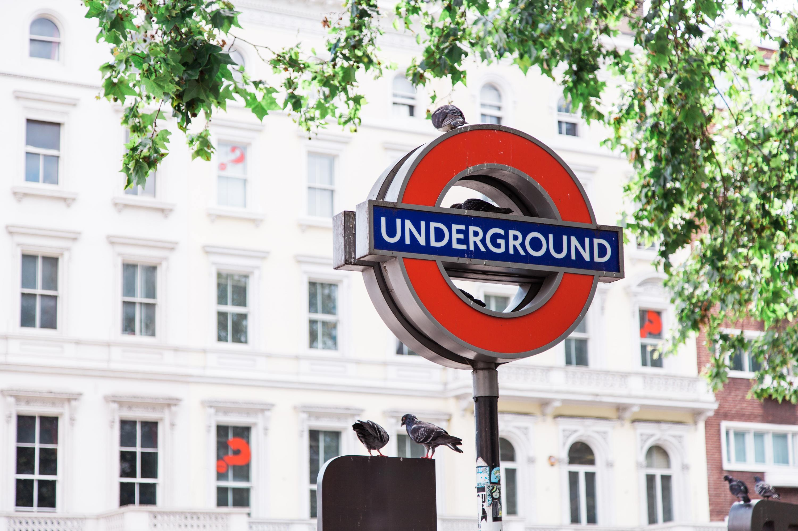
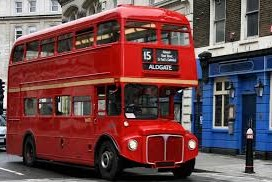
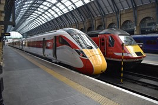
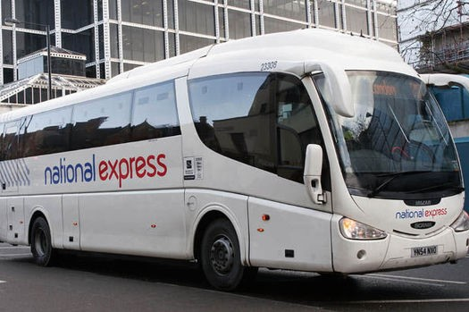

Transportation

Underground:
London underground is similar to the MRT in Taiwan. You can buy an oyster card and the ticket will have discount. Oyster card is like Easycard in Taiwan. You need to top up if it has no money. The routes of the tubes are very complicated. There are four directions, and you must make sure which way you’d like to go. You can download Tube Map APP. Check the map first before you go into the underground.
地鐵:倫敦地鐵跟台灣的捷運很類似，你可以買一張牡蠣卡，而它就跟悠遊卡一樣需要儲值，不過，地鐵路線非常複雜，有四個不同方向要注意，建議下載Tube Map，進地鐵站前一定要先查好路線

Bus:
Bus is also a convenient transportation. In addition to normal buses, London is famous for their double-decker buses. The payment method is also the oyster card. You can use CityMapper APP to check the timetable. The most important thing is that bus is cheaper than Underground. Therefore, it is a great choice in the London.
巴士:巴士也就是英國的公車，比較有特色的是倫敦代表之一的雙層巴士，而巴士一樣需要使用牡蠣卡，CityMapper可以查詢時刻表，相較於地鐵，巴士票價比較便宜，因此，搭巴士由倫敦會是個好選擇。

Train:
If you need to go to another city, trains are one of your choice. They are quite expensive. But, they are faster and more comfortable than coaches and the environment is good. Moreover, if you want to travel to another country, you can also take the train, called Eurostar. For me, the first time I tried the coach is awful, I have serious carsick. Therefore, I think I will avoid coaches next time.
火車:如果你的目的地是另一個城市，你可以選擇火車，火車票價較高，但是速度快、很舒服、環境好，甚至，你也可以搭乘火車(歐洲之星)去另一個歐洲國家。以我來說，因為之前在英國搭客運嚴重暈車，所以我會選擇火車。

Coach:
Coaches are one of the choice for people to travel to another city.. Compare to trains, the coaches are much cheaper. Coaches walk in the highway to go to another city. However, the disadvantage is that the road is rugged and it is possible to be carsick on the coach. Therefore, if you are not easy to be carsick and don’t want to spend too much money, you can choose coaches.
客運：你也可以搭乘客運去另一個城市，優點是便宜，它會開在類似高速公路上，不過，壞處是路面不平穩，所以容易暈車，因此，如果你不容易暈車而且不想花太多錢，你可以選擇客運。